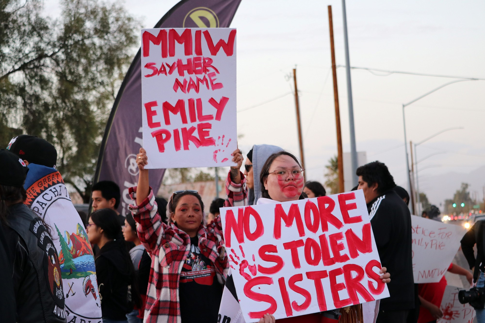
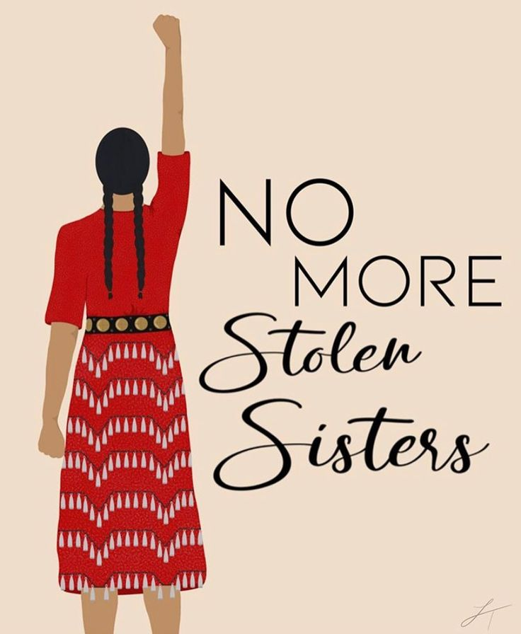
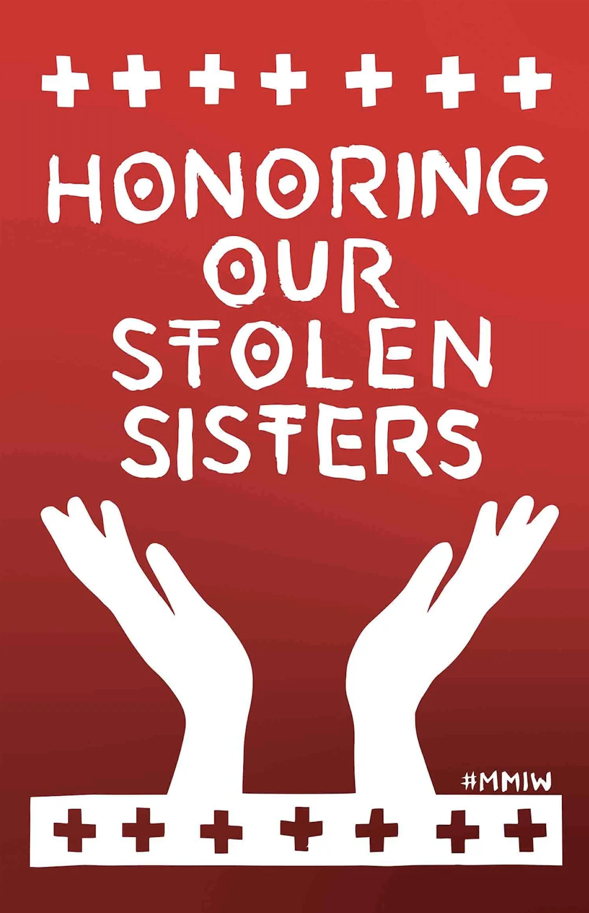
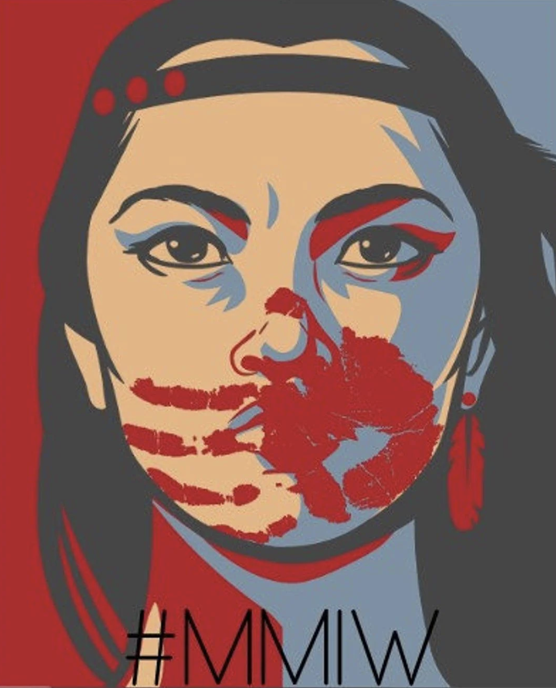

Jurisdictional Gaps
Complex overlapping authority between tribal, state, and federal law enforcement often creates confusion over who investigates crimes on tribal lands.
Raising Awareness for Missing and Murdered Indigenous Women
Across North America, Indigenous women, girls, and Two-Spirit people face alarming and disproportionate rates of violence, disappearance, and homicide. On some tribal reservations, Indigenous women are murdered at rates more than ten times the national average, yet these tragedies frequently go unreported in mainstream media.
The Missing and Murdered Indigenous Women (MMIW) movement demands systemic accountability, accurate data collection, and justice for families who have waited decades for answers.

Addressing the MMIW epidemic requires confronting longstanding legal, jurisdictional, and social obstacles that delay investigations and deny families closure.

Complex overlapping authority between tribal, state, and federal law enforcement often creates confusion over who investigates crimes on tribal lands.

Thousands of missing Indigenous women are misclassified under other racial categories or omitted entirely from federal missing person databases.

Studies show that the vast majority of MMIW cases receive zero local or national news coverage, depriving families of vital public tips.
Meaningful reform depends on sustained public advocacy, legislative support, and swift action when an Indigenous community member goes missing.